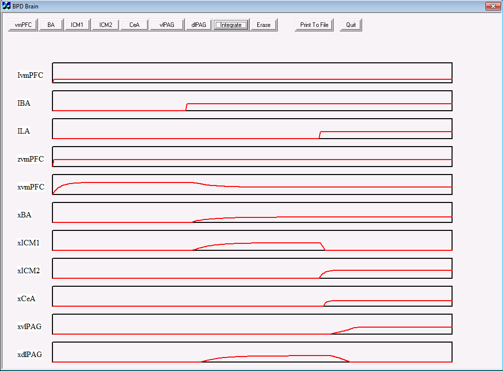
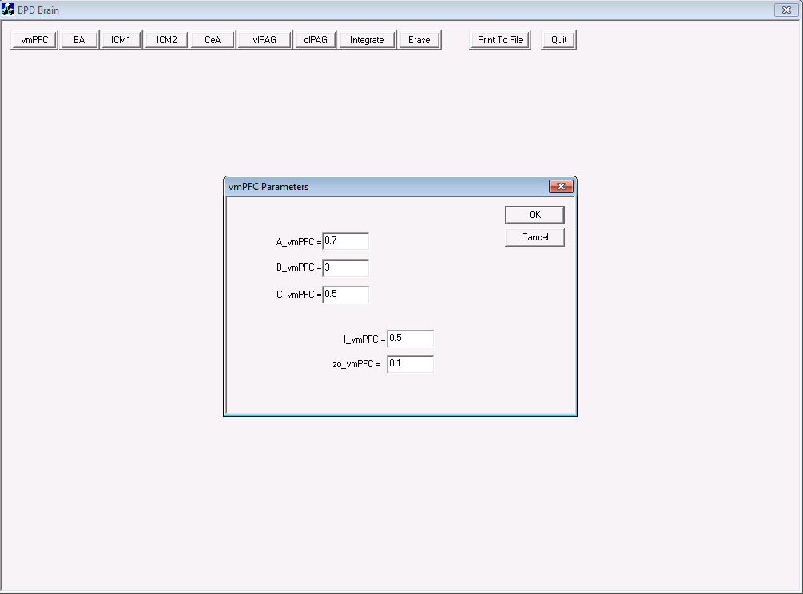
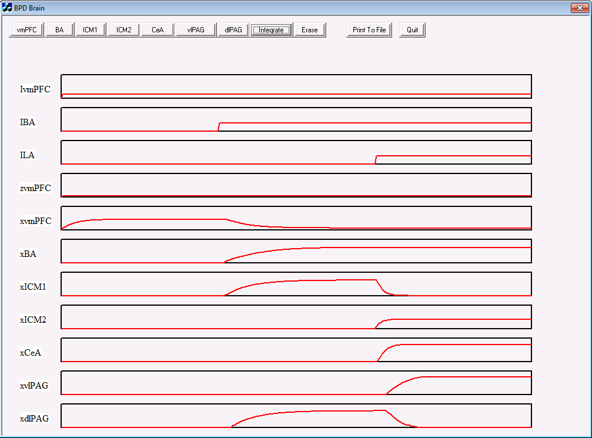

This is the readme for the BPD brain simulation for the paper: Berdahl CH (2010) A neural network model of Borderline Personality Disorder. Neural Netw 23:177-88 This model was contributed by Carl Berdahl. Usage: ------ Download and extract the archive. Open the BPDBrain.dsp project file in Microsoft Visual Studio (2010). Accept a one-way conversion to update project. Build the BPDBrain project. In windows explorer find the application file that was created BPDBrain/Debug/BPDBrain.exe and double click it to start. If you click on the integrate button the simulation runs with the default parameters set to a normal brain (fig. 7 in the paper)  To change the parameters to a BPD brain change the synaptic weight, zo_vmPFC from 1.0 to 0.1 by first clicking on the mvPFC button to edit:  Rerun the simulation by clicking integrate you should see a figure similar to (fig. 9 in the paper): 